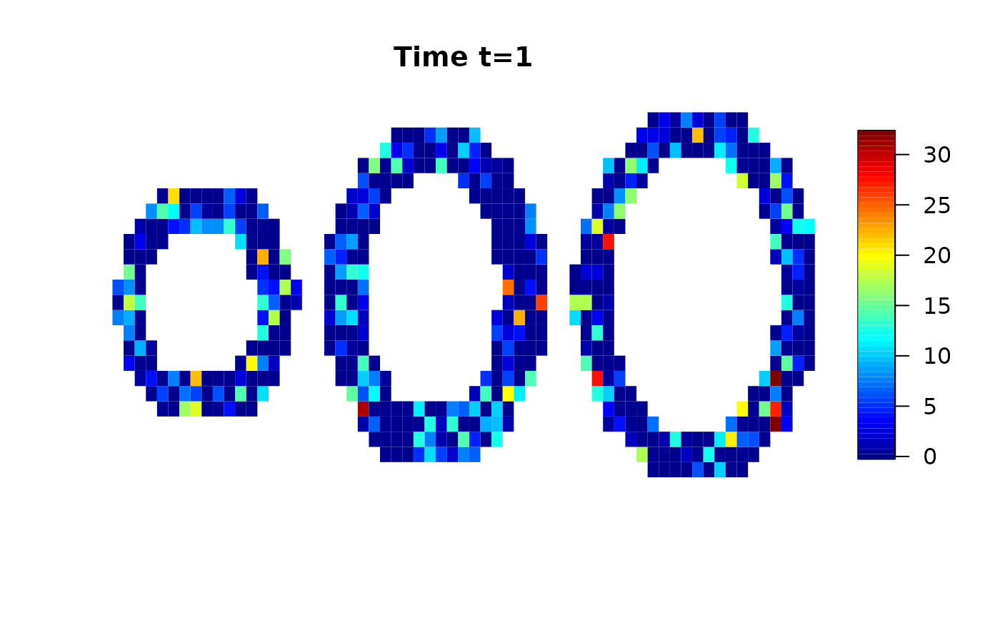
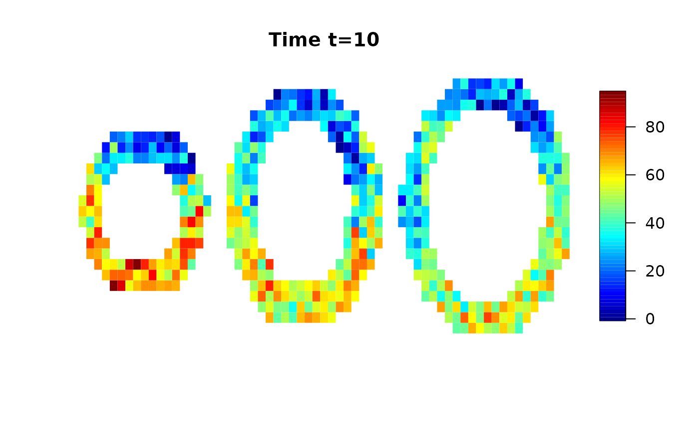
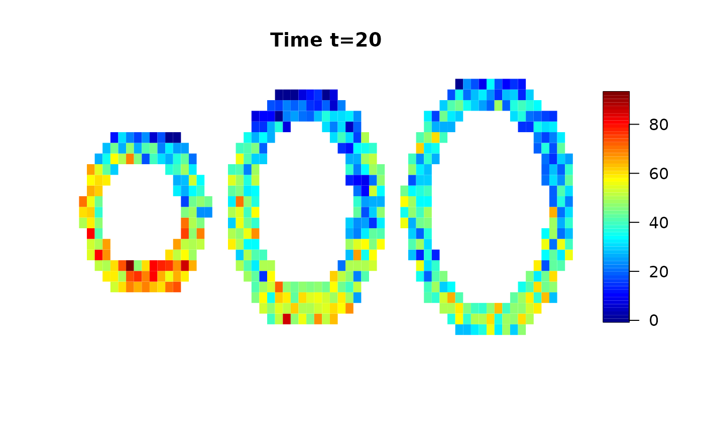
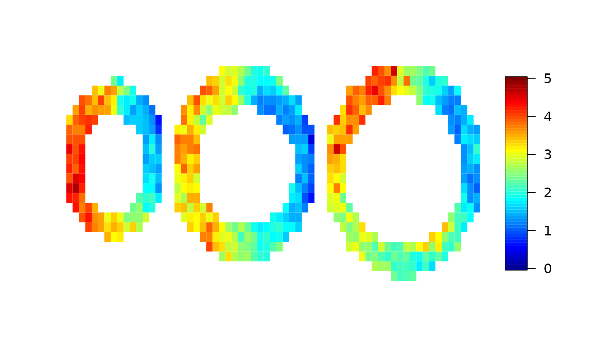
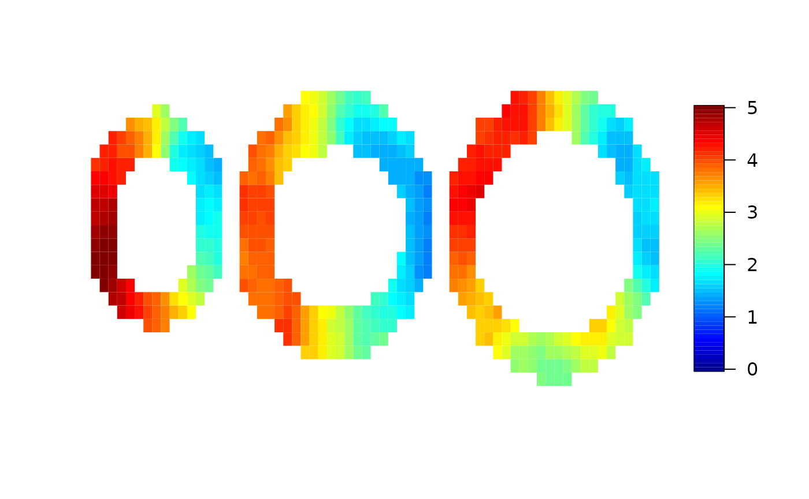
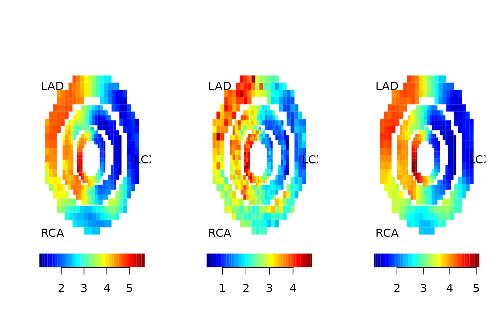

vignettes/largevignette/cmr-usage.Rmd
cmr-usage.RmdWe use a simulated data set provided by the cmR package and add random white noise.
data(cmrsim)
for (i in 1:dim(cmrdata_sim)[1])
for (j in 1:dim(cmrdata_sim)[2])
for (k in 1:3)
if (!is.na(cmrdata_sim[i,j,k,1]))
cmrdata_sim[i,j,k,]=cmrdata_sim[i,j,k,]+rnorm(30,0,sqrt(30))Let’s have a look on the data:



The function cmr() does the analysis and provides two methods: “local”, which is a voxel wise fitting of the time series and “spatial”, which uses the spatial prior used in Schmid (2011): Voxel-Based Adaptive Spatio-Temporal Modelling of Perfusion Cardiovascular MRI. IEEE TMI 30(7) p. 1305 - 1313.
Here we start with the local analysis. The local analysis can be easily parallelised, each computer core can compute one voxel. Note: parallel computing cannot be used on Windows due to restrictions in the parallel package.
local=cmr(cmrdata_sim,input_sim,method="local",cores=2)
The model uses a Bayesian framework and credible intervals are also produced. We can have a look at the length of the credible intervals voxelwise:
Now let’s have a look at the spatial analysis. Here, parallelisation is not as easy as above, but is also possible to some extent.
spatial=cmr(cmrdata_sim,input_sim,method="spatial",cores=2)
Finally, we compare the true maximum response used for the simulation and the results from the local analysis and the spatial analysis. Here, we use the “pseudo bullseye” representation.
par(mfrow=c(1,3))
pseudobullseye(maxresp_sim)#; title(main="true")
pseudobullseye(local$mbf)#; title(main="local")
pseudobullseye(spatial$mbf)#; title(main="spatial")